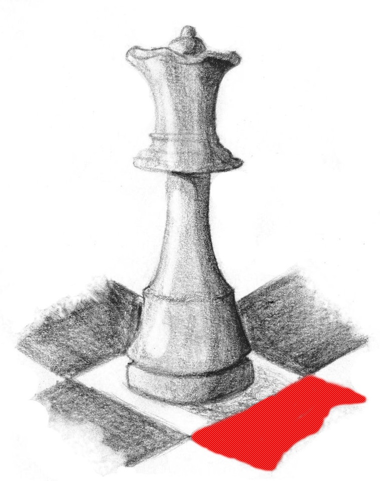

The Pawn is one of my favourite chess pieces because of its ability to work with other pawns and to become promoted. Pawn chains can be very powerful and a pawn can be promoted to another piece if it reaches the other side of the chess board.
Click the image to learn more about Pawns.
The Knight is one of my favourite chess pieces because of its unique L-shaped movement and ability to jump over other pieces. It is impossible to block a Knight.
Click the image to learn more about Knights.
The Queen is one of my favourite chess pieces because of its power. The Queen can move any number of spaces in any direction!
Click the image to learn more about the Queen.